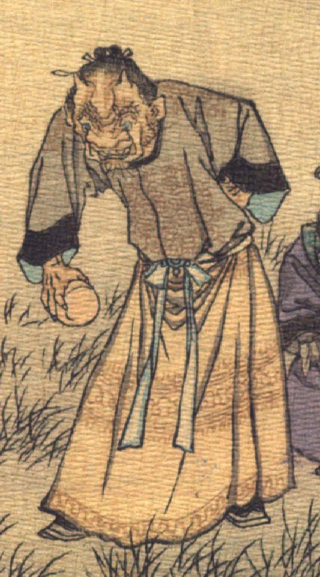

鬼。額に2本角を生やし、髪は後ろで結っている。額に皺が寄り、目玉は青い。耳は尖っており、顔つきは獣を思わせる。模様が入った墨色の上着と黄色いスカート状の衣服を着ている。立って、少し腰をかがめ、右手に丸い瘤を握っている。
著作者：J.Dautremer／出典：親書誌：U426_nichibunken_0123：Le vieillard et les démons／日付：2006／資源識別子：U426_nichibunken_0123_0005_0001
Copyright (c)2010- International Research Center for Japanese Studies, Kyoto, Japan. All rights reserved.